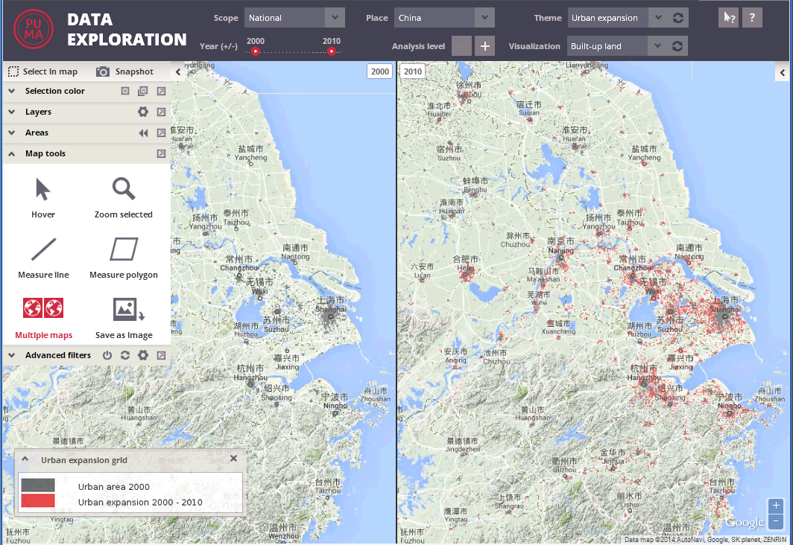

The multiple maps mode provides a possibility to divide the map window into two parts, each of them displaying a map for a different year.
This mode can be activated by clicking on the multiple maps button in the map tools panel:
The multiple maps mode can be also activated by selecting more than one year in the year switcher.
Once the mode is activated, the button turns into red color:
The map window is then split into two and in each part data for one of selected years are displayed.

This tool activates also the multiple years mode in all other components of the application – e.g. in charts and tables.
The tool can be deactivated by another click on the multiple maps button or by unselection of the other year(s) in the year switcher.